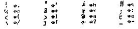

Nascom Journal |
4/81 5 |
Druckausgabe von NASPEN aus wird vorbereitet (bei 101E wird die Druckroutine eingetragen). Will man mit NASPEN arbeiten, macht man zunaechst einen Kaltstart von NASPEN, kehrt zu NAS-SYS zurueck und gibt dort den befehl P5 (evtl. vorher P0) ein. Dann kehrt man mit einem Warmstart zu NASPEN zurueck. In NASPEN laeuft dann die Druckausgabe mit dem NASPEN-Befehl P ueber den Fernschreiber. Diese Beschreibung wurde uebrigens mit NASPEN editiert und mit TTY-SYS gedruckt .
TTY-SYS kann zusammen mit dem 8K-BASIC, mit ASM/EPROM V2.0, mit NASPEN, mit DIS-SYS und mit ZEAP verwendet werden. Dabei gibt es folgende Besonderheiten:
8K-BASIC:
Vor dem Starten des BASIC wird P0 ausgefuehrt, Steuerzeichen werden
mit CHR$ direkt oder vom Programm aus abgeschickt. PRINT CHR$(1)
bewirkt z.b. die Ausgabe von CTRL A.
ASM/EPROM:
Vor den Start von ASM/EPROM wird P0 ausgefuehrt. In
ASM/EPROM werden dann mit dem Befehl L User
I/O-Routinen aktiviert. Steuerzeichen kann man dann
direkt an der Tastatur eingeben.
NASPEN:
Die arbeit mit NASPEN ist bei dem befehl P5 beschrieben.
DIS-SYS:
Vor dem Aufruf von DIS-SYS wird P0 ausgefuehrt und
die Druckausgabe durch Eingabe von CTRL A aktiviert.
ZEAP:
Nach einem Kaltstart von ZEAP kehrt man zu NAS-SYS zurueck. dann traegt
man bei 0F05 die Adresse von TTYOUT (B02E) ein, fuehrt P0 aus und gibt
CTRL A ein (von ZEAP aus kann man keine Steuerzeichen abschicken). Mit
einem Warmstart kehrt man zu ZEAP zurueck und kann dort mit dem Befehl
U Source-Listings und mit der Option 4 beim Assemblieren
Assembler-Listings drucken.
Die folgende Tabelle zeigt, fuer welche ASCII-Zeichen Doppelzeichen verwendet werden
Die Steuersignale fuer den Fernschreiber stehen an der PIO PORT B zur Verfuegung. Bit 0 dient zum Schalten des Linienstroms, Bit 0=0 bedeutet: Linienstrom unterbrochen. Bit 1 ist der Eingang von den Sendekontakten und Bit 6 steuert den Motor. Bit 6=0 bedeutet: Motor ein. Nach dem Abschalten des Motors werden alle ausgaenge hochohmig. Zum Anschluss des Fernschreibers muss man ein geeignetes Interface benuetzen, das galvanisch trennen sollte (Optokoppler). Empfohlen wird das Interface ‚Fernschreib-Interface V 1.1.‘.
Bernd Ploss
Datenelektronik – Systementwicklung
____________ _
D-____ _______
Tel. _____/_____
Falls Sie gerne ein TTY-SYS haben möchten, senden Sie bitte Ihre Bestellung an MK-Systemtechnik. Wir liefern Ihnen das TTY-SYS z.Zt. ab Lager.
Bestimmt ist Ihnen schon einmal der Strichcode aufgefallen, mit dem viele Waren gekennzeichnet werden. In vielen Kaufhäusern und Supermärkten sind die Kassen schon mit Strichcodelesern ausgerüstet, die das umständliche Eintippen von Artikelnummer und Preis überflüssig machen.
Aber nicht nur zur Kennzeichnung von Waren ist der Strichcode geeignet. Eine Anwendung, für die er geradezu ideal ist, sind Computerprogramme. Bisher kann man ein Programm entweder in Klartext in einer Zeitschrift abdrucken. Dann muß der Leser das Programm mühsam von Hand in den Rechner eintippen. Oder man vertreibt das Programm auf einem speziellen maschinenlesbaren Datenträger (z. B. Kassette oder EPROM). Dann muß aber in der Regel jedes Exemplar einzeln vervielfältigt werden, was das Programm natürlich erheblich verteuert.
Programme in Strichcode haben die Vorteile beider Verfahren. Das Programm kann billig durch Druck oder Fotokopie vervielfältigt werden, ist aber direkt maschinenlesbar. Um ein Programm im Strichcode in den Rechner zu laden benötigt man einen Strichcodeleser und Software zur Dekodierung des Strichcodes.
Ein Problem war bislang der Strichcodeleser. Hewlett-Packard liefert einen Lesestift für knapp 300 DM. Ich war allerdings skeptisch, ob ein Lesestift zu diesem Preis für viele Nascom-Besitzer interessant wäre oder ob die Mehrheit nicht weiterhin die Programme von Hand eintippen würde. Jetzt hat die Zeitschrift mc aus dem Franzis-Verlag einen Strichcodeleser für ca. 100 DM angekündigt und damit wird der Strichcode auch für das Nascom-Journal interessant.
| Seite 23 von 31 |
|---|